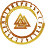

Рунолог · північна традиція

Герман pro.runes
Рунолог із практикою понад два роки. Пройшов навчання в рунічному ордені, у традиції, якій понад сто років. Працюю з класичними рунічними ритуалами на силі стихій, розкладами та програмними свічками — і даю людям лише те, що перевірив на собі.